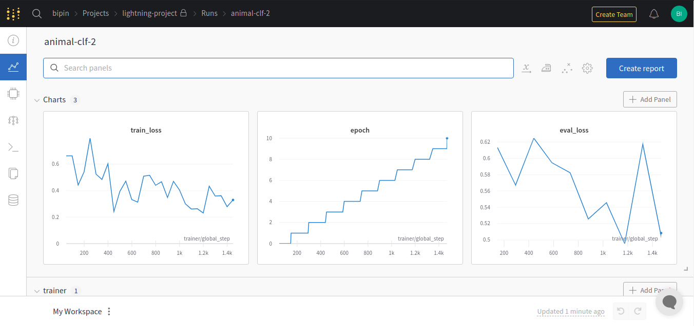
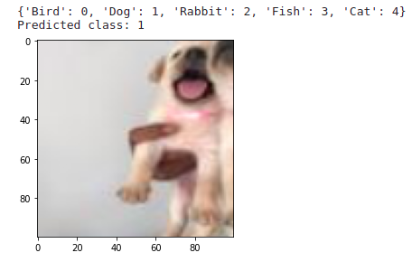

Image classification¶
Introduction¶
With this chapter, we will start our journey into the world of computer vision. Apart from the task of image classification, this chapter will also give you a head start to a bunch of other libraries and tools that are commonly used by the machine learning community.
By the way, if you are not familiar with image classification, it’s as simple as shown in the below image:

As shown above, the model has to classify the image into the correct class/category that it belongs to.
Dataset¶
The dataset we will be using for this task can be found here. The dataset contain pictures of animals belonging to the following classes:
Bird
Dog
Rabbit
Fish
Cat
Guinea pig / mouse
Other
Of the above categories, we will drop images belonging to ‘Guinea pig / mouse’ and ‘Other’ from the dataset and use the rest of the categories.
The dataset contains a folder called ‘animal_images’ and a csv file called ‘animal_data_img.csv’.
The folder ‘animal_images’ contains all the animal pictures whereas the labels of each image is present in ‘animal_data_img.csv’ file.
Here is a sample of ‘animal_data_img.csv’ file:

The ‘Animal_Type’ column will be our labels and ‘Image_File’ column contains the path to the image file.
Preparing the data¶
Now let’s load in our csv file and write a dataset loading class using pytorch.
The below code will load our csv with the required columns:
import pandas as pd
csv_path = "../input/animal-images-dataset/animal_data_img.csv"
df = pd.read_csv(
csv_path,
usecols=['Animal_Type', 'Image_File']
)
print(df.head())
Output:
Animal_Type Image_File
0 Bird animal_images/1633802583762_Indian Ringneck fo...
1 Dog animal_images/1633802583996_Rottweiler Puppy f...
2 Rabbit animal_images/1633802584211_Rabbit for sale.jpg
3 Bird animal_images/1633802584412_Cokatail bird for ...
4 Bird animal_images/1633802584634_Apple Konda Pigeon...
The value inside ‘Animal_Type’ is in string format, we need to convert them to integers. But before doing that, let’s drop images with ‘Guinea pig / mouse’ and ‘Other’ labels:
# exclude all rows containing 'Guinea pig / mouse' and 'Other' as labels
df = df.query("Animal_Type not in ['Guinea pig / mouse', 'Other']").reset_index(drop=True)
Now let’s convert the labels from string to integer format:
label_string = df['Animal_Type'].unique()
label_int = range(len(label_string))
# create a dictionary with string to int label mapping
label_mapping = dict(zip(label_string, label_int))
print(label_mapping)
Output:
{'Bird': 0, 'Dog': 1, 'Rabbit': 2, 'Fish': 3, 'Cat': 4}
Let’s apply this mapping to ‘Animal_Type’ column:
df['labels'] = df['Animal_Type'].map(label_mapping)
We will now write a simple dataset loading class with pytorch. The class will take in the dataframe we just created and extract the image paths and labels.
These are the steps we will follow while loading our images and its labels:
Get the path to the image and its label.
from pathlib import Path
root_dir = Path("../input/animal-images-dataset/animal_images")
sample_img_path = df.loc[0, 'Image_File']
sample_label = df.loc[0, 'labels']
Load the image using python’s ‘PIL’ library.
from PIL import Image
sample_img = Image.open(root_dir/sample_img_path)
Now we will randomly crop the image and resize it and finally convert it to a pytorch tensor.
from torchvision.transforms import transforms
transforms = transforms.Compose([
transforms.RandomResizedCrop((100, 100)),
transforms.ToTensor(),
])
sample_img = transforms(sample_img)
Finally we will convert the label to a pytorch tensor.
import torch
sample_label = torch.tensor(sample_label, dtype=torch.long)
And that’s it, we will wrap all of the above stuff into our dataset loading class:
import torch
from torch.utils.data import Dataset
from torchvision.transforms import transforms
from PIL import Image
from pathlib import Path
class LoadDataset(Dataset):
def __init__(self, df):
self.root_dir = Path("../input/animal-images-dataset/animal_images")
# all the image paths are stores here
self.images = df['Image_File'].values
# all the labels are stored here
self.labels = df['labels'].values
# these augmentations are applied to each image
self.transforms = transforms.Compose([
transforms.RandomResizedCrop((100, 100)),
transforms.ToTensor(),
])
def __getitem__(self, idx):
img_path = self.root_dir/self.images[idx]
# load the image and apply the augmentations
image = Image.open(img_path)
image = self.transforms(image)
# load the label corresponding to the above image
label = torch.tensor(self.labels[idx], dtype=torch.long)
return (image, label)
def __len__(self): return len(self.images)
Since we have the class to load our images and labels, let’s split our dataframe into train and test sets:
from sklearn.model_selection import train_test_split
train_df, test_df = train_test_split(
df,
test_size=0.2,
shuffle=True,
stratify=df['labels'],
random_state=42,
)
Now, load in the images and labels of train and test sets:
# training set
train_ds = LoadDataset(train_df)
# test set
test_ds = LoadDataset(test_df)
Training the model¶
We will use pytorch lightning to do the training of our model. Using pytorch lightning is similar to using pytorch, but we will control everything(training, validation, dataloaders etc) from a single place and by doing so we get a lot of extra benefits including:
a wide range of ready to use callbacks like early stopping.
learning rate scheduler
automatic batch finder
run the code on different devices(like cpu, gpu, tpu etc) with minimal change and so on.
Building the model class¶
Let’s see how pytorch lightning organizes our code.
First of all, we need to use pytorch lightning’s LightningModule to build our model class, so let’s import it:
from pytorch_lightning import LightningModule
Note
You can install pytorch lightning by running pip install pytorch-lightning from the terminal.
We will build an AnimalModel model class. This model class will contain the code for training and validation dataloaders, training and validation steps and finally the optimizer. Below is the blueprint of our model class which uses pytorch lightning’s LightningModule:
class AnimalModel(LightningModule):
def __init__(self):
super().__init__()
def forward(self, x):
# similar to pytorch forward method
def train_dataloader(self):
# put the code for training dataloader here
def val_dataloader(self):
# put the code for validation dataloader here
def configure_optimizers(self):
# put the optimizer here
def training_step(self, batch, batch_idx):
# everything done during training the model goes here
def validation_step(self, batch, batch_idx):
# everything done during validation goes here
The training_step and validation_step takes in ‘batch’ and ‘batch_idx’ as arguments, this is same as the one shown in pure pytorch below:
# training step
for epoch in range(epochs):
for batch_idx, batch in enumerate(train_dataloader):
training_step(batch, batch_idx)
So you get the batch itself as argument in training_step as well as its index. Similar thing happens for validation also.
Now let’s fill in each part of our AnimalModel one by one. First, let’s create the model (‘resnet34’) that we will be using for this task. We will use the timm library for creating the model. So, let’s import the library:
import timm
Note
You can install timm by running pip install timm from your terminal
Now let’s create the model inside __init__ method of our AnimalModel:
class AnimalModel(LightningModule):
def __init__(self):
super().__init__()
# hyper-parameters for training the model
self.batch_size = 64
self.learning_rate = 1e-7
# create a pretrained resnet34 by specifying the number of labels to classify
self.model = timm.create_model(
"resnet34",
pretrained=True,
num_classes=len(labels)
)
The forward method of the model is as simple as passing the inputs to the model and returning the output:
class AnimalModel(LightningModule):
def forward(self, x):
return self.model(x)
We already created our training and evaluation datasets earlier, now let’s wrap it in a pytorch dataloader and return it:
from torch.utils.data import DataLoader
class AnimalModel(LightningModule):
# return training dataloader
def train_dataloader(self):
return DataLoader(train_ds, batch_size=self.batch_size, shuffle=False)
# return validation/evaluation dataloader
def val_dataloader(self):
return DataLoader(test_ds, batch_size=self.batch_size, shuffle=False)
Now let’s configure our ‘AdamW’ optimizer:
class AnimalModel(LightningModule):
# return the optimizer
def configure_optimizers(self):
return torch.optim.AdamW(self.model.parameters(), lr=self.learning_rate)
Now it’s time to write the training code. This time, the code for doing common procedures like stepping the optimizer(opt.step()), zeroing out the gradients(opt.zero_grad()), backprop(loss.backward()) etc are taken care by pytorch lightning.
These are the things done in the training step:
Get the inputs and labels from ‘batch’.
Pass the inputs to the model, get the outputs and calculate the loss.
Log the loss(using
self.log()) and setprog_bar=Trueto show the training loss along with the progress bar.Finally, return the training loss.
import torch.nn.functional as F
class AnimalModel(LightningModule):
def training_step(self, batch, batch_idx):
x, y = batch
out = self.model(x)
loss = F.cross_entropy(out, y)
self.log("train_loss", loss, prog_bar=True)
return loss
Similarly, we will write the validation step:
class AnimalModel(LightningModule):
def validation_step(self, batch, batch_idx):
x, y = batch
out = self.model(x)
loss = F.cross_entropy(out, y)
self.log("eval_loss", loss, prog_bar=True)
return loss
If you wish to have a complete view of our model class, here it is:
import timm
from torch.utils.data import DataLoader
import torch.nn.functional as F
class AnimalModel(LightningModule):
def __init__(self):
super().__init__()
# hyper-parameters for training the model
self.batch_size = 64
self.learning_rate = 1e-7
# create a pretrained resnet34 by specifying the number of labels to classify
self.model = timm.create_model(
"resnet34",
pretrained=True,
num_classes=len(label_int)
)
def forward(self, x):
return self.model(x)
def train_dataloader(self):
return DataLoader(train_ds, batch_size=self.batch_size, shuffle=False)
# return validation/evaluation dataloader
def val_dataloader(self):
return DataLoader(test_ds, batch_size=self.batch_size, shuffle=False)
# return the optimizer
def configure_optimizers(self):
return torch.optim.AdamW(self.model.parameters(), lr=self.learning_rate)
def training_step(self, batch, batch_idx):
x, y = batch
out = self.model(x)
loss = F.cross_entropy(out, y)
# this is how we log stuff and show it along with the progress bar(prog_bar=True)
self.log("train_loss", loss, prog_bar=True)
return loss
def validation_step(self, batch, batch_idx):
x, y = batch
out = self.model(x)
loss = F.cross_entropy(out, y)
self.log("eval_loss", loss, prog_bar=True)
return loss
Creating the trainer¶
Now it’s time to meet the real hero - The Trainer. Pytorch lightning’s trainer is where all your favourite flags are passed, which includes:
the learning rate finder
over-fitting batches
sanity check before running the whole training
different types of callbacks
logging everything to platforms like wandb, mlflow etc.
You can get the complete capabilties of trainer here.
Let’s see how we can use the automatic learning rate finder of the trainer:
from pytorch_lightning import Trainer
trainer = Trainer(
accelerator='auto', # automatically detects GPUs or other accelerators
auto_lr_find=True, # learning rate finder
max_epochs=10, # number of epochs to train for
devices=1, # number of devices to use for training(here it is 1 GPU)
)
Now let’s run the learning rate finder:
model = AnimalModel()
# pass the model you created
trainer.tune(model)
The .tune() method will run the automatic learning rate finder and over write existing learning rate value with what we get from learning rate finder. Thus, you don’t have to manually set it again.
By default, lightning’s trainer looks for self.learning_rate or self.lr to store the resulting learning rate. So make sure that you store your learning rate in either of these variables inside your AnimalModel.
Now let’s see how we can use the weights and biases(wandb) callback in pytorch lightning. If you don’t have an account in wandb, you can create it here.
Note
Learn more about weights and biases from here.
For now, we will log our pytorch model, the training loss and validation loss onto wandb. If you want to log some additional stuff, you could use pytorch lightning’s self.log(). For example, you could log the learning rate by writing the following code inside training_step or validation_step of your AnimalModel:
self.log("learning_rate", self.learning_rate)
Now let’s import wand callback and pass it to the trainer. Also pass in a project name and run name to differentiate projects as well as different experiments in the same project:
from pytorch_lightning.loggers import WandbLogger
# set log_model=True to log the model to wandb after training
logger = WandbLogger(project='lightning-project', name='animal-clf-2', log_model=True)
trainer = Trainer(
accelerator='auto',
auto_lr_find=True,
max_epochs=10,
devices=1,
logger=logger, # wandb logger
)
Now let’s find the learning rate and fit/train the model(before running the whole training, pytorch lightning automatically runs a sanity check to see if there are any bugs in our code :)
model = AnimalModel()
trainer.tune(model)
# train the model
trainer.fit(model)
Once the training is over, you can head to your wandb dashboard to see the results as well as the saved models. During inference, you can directly fetch your models from wandb and load it as a normal pytorch model. Here are the results logged in wandb from the current experiment:
Testing the model¶
Now, let’s see how our model predicts on a sample image from our test set:
model.eval()
sample = test_ds[6]
# model prediction
pred = model(sample[0].unsqueeze(0))
pred = torch.argmax(pred, dim=1).item()
Let’s print the prediction and the image:
import matplotlib.pyplot as plt
print(label_mapping)
# final prediction
print(f"Predicted class: {pred}")
# show image
plt.imshow(torch.permute(sample[0], (1, 2, 0)));
Output:
Apart from the image classification task, we have learnt a ton of other stuff too - lightning, weights and biases, timm library🏎️
And that brings to the end of this chapter. We will explore other tasks in computer vision in the coming chapters :)